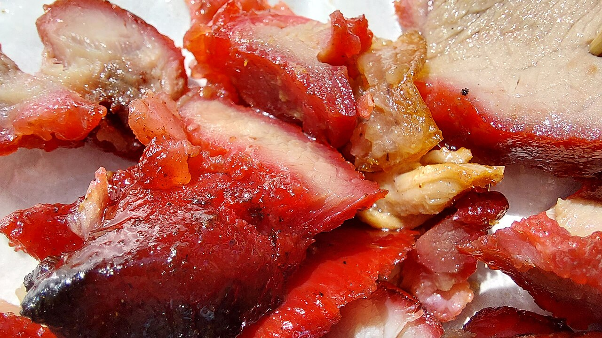

蜜汁叉烧Char Siu · 粤菜
取猪梅头肉(猪颈两侧)切长条,以海鲜酱、蚝油、玫瑰露酒等腌制过夜, 入炉慢烤、中途刷蜜糖,烤至边缘微焦如"火边"。切片即食,亦可入碟头饭、叉烧包。
去哪儿吃?
香港·再兴烧腊饭店烧腊 · 人均 ¥80
香港湾仔轩尼诗道265-267号地下
点评:屡获米其林推荐的叉烧名店,蜜味浓、肉汁足,肥瘦随心拣。
广州·广州酒家(文昌总店)粤菜 · 人均 ¥110
广东省广州市荔湾区文昌南路2号
点评:老字号烧腊稳定,蜜汁叉烧配一盅例汤,地道广府吃法。
怎么做?
- 猪梅头肉 600g
- 叉烧酱/海鲜酱、蚝油
- 生抽、老抽、白糖
- 玫瑰露酒或料酒
- 蜂蜜(刷面)
- 姜、蒜
- 梅头肉切 4cm 宽长条,用叉子扎孔便于入味。
- 将酱料与姜蒜调成腌汁,肉条充分抓匀,冷藏腌制至少 4 小时(隔夜更佳)。
- 烤箱预热 200℃,肉条架于烤网,垫烤盘接汁,烤 20 分钟。
- 取出刷一层蜂蜜与腌汁混合液,翻面再烤 15 分钟,重复一次。
- 烤至表面微焦红亮,静置 5 分钟让肉汁回流,再切片装盘。
小贴士:全程"小火慢烤、多次刷蜜"才出焦糖般的亮泽; 腌得够久、切得够薄,叉烧才既入味又不柴。